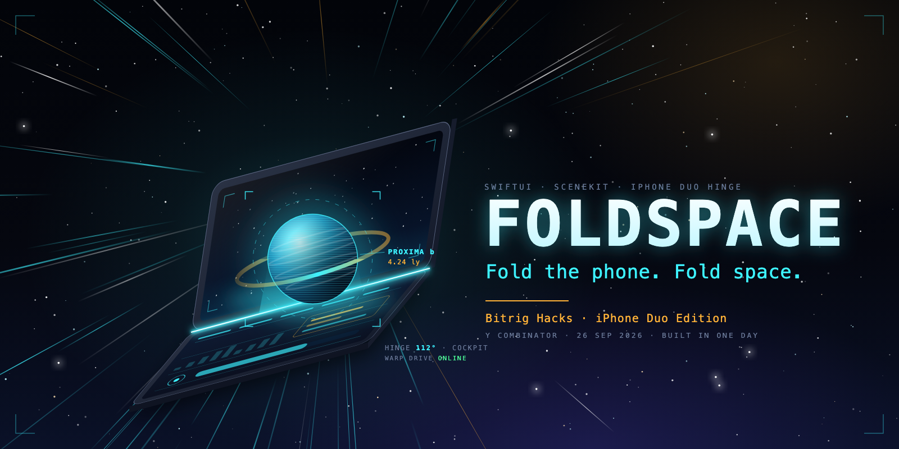

Bitrig Hacks · iPhone Duo Edition · Y Combinator · 26 Sep 2026
The hinge is the ship.
Fold the phone. Fold space.
FOLDSPACE is a SwiftUI space-exploration game built in one day for iPhone Duo. Close the phone smoothly and you fold space to the next star. Squeeze it and snap it open and a planet shatters in the crease. Pump it like a bellows to charge the jump to Andromeda. Every hinge posture is a flight state; every hinge motion is a verb.
The idea in one breath
Everyone used the hinge for animations. We used it as an input device.
Foldable phones have reported their hinge angle for years. FOLDSPACE turns that continuous angle into a controller, and turns the two displays that meet at a known angle into a 3D corner where a hologram can sit.
Close the phone smoothly and you fold space to the next star. Squeeze it and snap it open and a planet shatters in the crease. Pump it like a bellows to charge the jump to Andromeda. Close it slowly while orbiting the Sun and you dive into the core.
None of this is possible on a flat iPhone. All of it uses what is unique to iPhone Duo: the continuous hinge angle, two displays that meet at a known angle, an outer display that faces the world when the phone is closed, and a 7.6″ canvas with a fold across it.
Stranded
You're in the Solar System with normal engines. Hop between planets, drag the probe across the fold into the hologram to plant a beacon, and recover Exotic Matter, the Field Coil and the Navigation Core from Mars, Jupiter and Neptune.
Warp
Pick a star on the galaxy map, close the phone, and fold space Alcubierre-style. Explore or destroy each world: destroying yields more energy but you lose whatever you might have found. Dive into the Sun for the Stellar Core Sample that unlocks the Nova Lance.
The Core
Slingshot around Sagittarius A*, then pump the hinge to charge the Fold Core and slam it shut. Open it: the Milky Way behind you, Andromeda rising out of the corner.
How the hinge drives the game
Every posture is a flight state. Every motion is a verb.
The recogniser in Foldspace/Hinge/HingeEngine.swift keeps a 2.5-second ring of (angle, velocity, t) samples and turns them into discrete gestures with hysteresis, so a squeeze never reads as a warp and a hop never reads as a close. Thresholds below are the ones in the code.
Postures
| Hinge posture | Angle | What you see | What it means |
|---|---|---|---|
| Closed | 0–12° | Outer 5.4″ display | Docked, or in transit ("FOLDING SPACE · 4.24 ly") |
| Squeezed | 12–45° | Crease glows | Nova Lance charging |
| Cockpit | 45–135° | Windshield above the fold, console below | Flying. The planet hologram sits in the fold |
| Open | 135–170° | Wide cockpit | Flying |
| Flat | 170–180° | Whole 7.6″ inner display | Galaxy map |
Gestures
| Hinge motion | Recognised when | Emitted as | Game verb |
|---|---|---|---|
| Dip the lid and bring it back | From the cockpit zone, below 70° then back above 85° within 1.5 s, never below 30° | .hop | Hop to the next living planet in the system |
| Close the phone smoothly | From ≥ 60° all the way to closed; quality 1.0 at 60–160°/s, falling to 0.2 for a slam (> 320°/s) and 0.3 for a crawl (< 20°/s) | .warpClose(quality:) | Warp: fold space to the targeted star. Quality below 0.45 collapses the bubble: −15 hull, dropped out short |
| Squeeze to < 45° and hold | Enter the squeezed zone while closing (not during a pump) | .squeezeBegan | Charge the Nova Lance. A tighter squeeze charges faster |
| Snap it open | Leave 45° with a peak velocity > 250°/s and pass 100° within 0.6 s | .snapOpen | Fire (needs ≥ 60 % charge). The planet shatters in 3D in the corner |
| Let it drift open | Leave 45° slowly, or stall before 100° | .squeezeCancelled | Lance discharged safely |
| Pump it four times, then slam | Direction reversals with ≥ 40° swings at > 15°/s, only while the Fold Core is charging | .pump(count:) → .pumpComplete | Charge the Fold Core for the 2.5-million-light-year jump, then close to go |
| Close slowly while orbiting the Sun | Continuous angle: 120° = corona, 12° = core; open past 130° to climb out | angle, every 16 ms | Dive: depth = fold amount. Hull burns as depth2.2; reach 97 % for the core sample |
| Lay it flat | Settle at ≥ 170° with |velocity| < 40°/s; lifted again below 160° | .laidFlat / .liftedFromFlat | Galaxy map on the full inner display; lift to return to the cockpit |
Velocity is lightly smoothed (35 % previous, 65 % instantaneous) so readouts don't jitter. The engine is fed identically by the Duo hinge, the on-screen hinge control, or CoreMotion tilt, so gestures behave the same in the simulator and on hardware.
Where you can go
Real stars. Real distances. Real facts.
The catalog in Foldspace/Universe/UniverseData.swift uses NASA Exoplanet Archive data for every world. Fold time is 2.2 s + 0.9 × log₁₀(ly), capped at 5 s, from Sol; Andromeda is a fixed 7 s.
| Destination | Distance | Act | Fold cost | Fold time | What's there |
|---|---|---|---|---|---|
| Sol | home | I | — | — | Mercury → Neptune. The three warp-drive parts are hidden on Mars, Jupiter and Neptune. The Sun is divable: corona ~1,000,000 K, photosphere 5,800 K, core 15,000,000 K. |
| Alpha Centauri | 4.24 ly | II | 30 | 2.8 s | Proxima b (1.07 M⊕, 11.2-day orbit, habitable zone) and Proxima d |
| Barnard's Star | 5.96 ly | II | 35 | 2.9 s | Four sub-Earth planets confirmed 2024–2025 |
| Wolf 359 | 7.86 ly | II | 40 | 3.0 s | A flare star with a candidate ice giant |
| Sirius | 8.6 ly | II | 45 | 3.0 s | The brightest star in our sky and its white-dwarf companion |
| Epsilon Eridani | 10.5 ly | II | 50 | 3.1 s | A young system with a gas giant and debris rings |
| Tau Ceti | 11.9 ly | II | 55 | 3.2 s | Super-Earths e and f |
| TRAPPIST-1 | 40.7 ly | II | 80 | 3.6 s | Seven Earth-sized planets, three in the habitable zone |
| Sagittarius A* | 26,670 ly | III | 150 | 5.0 s | The Milky Way's 4-million-solar-mass black hole. Fold = gravity. Earth's clock races while yours crawls. Fire the Nova Lance at it and the beam simply vanishes. |
| Andromeda | 2,537,000 ly | III | Fold Core | 7.0 s | The finale. Needs a fully pumped Fold Core, then one clean close. |
iPhone Duo APIs
What the Duo gives us, and where it goes.
| Duo capability | Where it's used |
|---|---|
onHingeChange (hinge status + continuous angle) | Hinge/HingeSourceModifier.swift feeds HingeEngine.ingest(angle:) and flips the engine's source to .duo, which hides the on-screen hinge control |
Reserved regions: .division (the fold), .occlusion (camera) | FoldGeometry + UI/Components/FoldSeam.swift: a 14 pt band at the fold hosts nothing interactive. The beacon probe drag deliberately crosses it, console → hologram |
| Outer display ↔ inner display continuity | UI/Outer/OuterDisplayView.swift shows FOLDING SPACE / FOLD CORE / DOCKED cards while closed; the cockpit resumes on open. The camera rig in SpaceScene keeps the hologram in place while the screens move |
| Size classes instead of orientation locks | RootView and CockpitView split at the fold, never at a fixed pixel. The galaxy map's side panel drops below the chart in portrait |
| Split View / multiple windows | UIApplicationSupportsMultipleScenes is on; the galaxy map is a fine second window |
Build-flag note. Xcode 27.1 beta (the first SDK with the Duo APIs) needs macOS 26.6+. The native hinge path is behind the DUO_SDK compilation condition in project.yml and HingeSourceModifier.swift, so the same engine runs from three sources: the Duo hinge, an on-screen hinge control, or CoreMotion tilt on a flat iPhone.
Architecture
One engine, one controller, one store.
Angle in, verbs out. Every hinge source feeds the same recogniser; every view observes the same @Observable store; the sponsor services hang off the edges and never block the game.
The deeper walkthrough, with a warp-jump sequence diagram, the gesture recogniser's state machine and per-module notes, is in docs/ARCHITECTURE.md.
Sponsor stack
The game is fully playable offline. The stack makes it a shared universe.
Supabase
Every beacon, every destroyed world, every warp and every Andromeda arrival is posted to an events table (callsign, event, body, energy, created_at). The Swift client speaks PostgREST directly: select, order=created_at.desc, limit.
- Fire-and-forget: the game never waits on the network
- Failed inserts queue in memory (max 50) and flush on the next refresh
- Anon key + row-level security: anyone can insert and read, nobody can edit
- Feeds the live Galactic Registry dashboard
OpenAI
The ship computer turns the real catalog facts for the current body into short, in-character scan briefings and warp readouts, and gives the flight log a voice.
- Grounded in
UniverseData: the model gets the real facts and is told to stay inside them - Short replies, cockpit register, no lore invented
- Optional: with no key the console shows the raw scan facts
Sentry
SceneKit at 60 fps on a transparent view, a 60 Hz flight loop and a gesture recogniser are exactly the kind of code that fails quietly. Sentry watches all three.
- Every
HingeGestureis a breadcrumb, so a misread warp is debuggable - Warp, dive and shatter sequences are traced as spans
- Registry HTTP failures are captured, not swallowed
Screenshots
Seven moments, one hinge.


Run it
Any iPhone simulator today. iPhone Duo on Xcode 27.1.
Requirements
macOS 26+, Xcode 26.3+ (Xcode 27.1 beta for the iPhone Duo simulator), and xcodegen.
# generate the project and open it
brew install xcodegen
git clone https://github.com/vnmoorthy/foldspace.git && cd foldspace
xcodegen generate && open Foldspace.xcodeprojPick any iPhone simulator and run. Use the hinge control pinned to the bottom of the screen: CLOSE SLAM OPEN FLAT HOP SQUEEZE SNAP PUMP ×4, or drag the lid yourself. Everything the hinge can do is also reachable from the console, so the game is fully playable on a flat iPhone.
# command line
xcodebuild -project Foldspace.xcodeproj -scheme Foldspace \
-destination 'platform=iOS Simulator,name=iPhone 17 Pro' \
CODE_SIGNING_ALLOWED=NO buildOn iPhone Duo
Xcode 27.1 beta ships the first SDK with the Duo hinge APIs. Turn on the native path with the DUO_SDK compilation condition, run on iPhone Duo, and fold the device from Device Hub. The on-screen hinge control hides itself as soon as the engine's source becomes .duo.
# project.yml → settings.base
SWIFT_ACTIVE_COMPILATION_CONDITIONS: "$(inherited) DUO_SDK"
# or in Xcode 27.1: Build Settings → Active Compilation Conditions → DUO_SDKStage demos
The gear menu in the console has Demo → Act II · Warp (drive assembled, 200 energy, home at Earth) and Demo → Act III · The Core (Nova Lance, core sample and the Sagittarius A* pass done, 600 energy, parked at the black hole) so a three-minute demo can jump straight to the pumps.
Links
github.com/vnmoorthy/foldspace
registry.html · Galactic Registry dashboard
FOLDSPACE-Deck.pptx · slide deck
ARCHITECTURE.md · engine, store, sequences